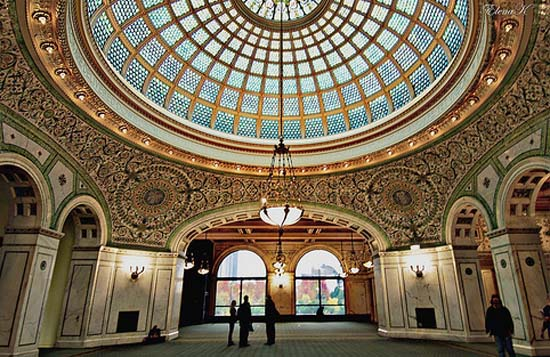

Both the wedding *ceremony* and *reception* are to take place at the Chicago Cultural Center, across the street from Millenium park and the lake.

The Chicago Cultural Center is a historic arts center, hosting hundreds of arts exhibitions and performances each year. It's home to the largest Tiffany-stained glass dome in the world, and one of Chicago's ten most popular attractions.
from cityofchicago.org...Completed in 1897 as Chicago’s first central public library, the building was designed to impress and to prove that Chicago had grown into a sophisticated metropolis. The country’s top architects and craftsmen used the most sumptuous materials, such as rare imported marbles, polished brass, fine hardwoods, and mosaics of Favrile glass, mother-of-pearl and colored stone, to create an architectural showplace. Located on the south side of the building, the world’s largest stained glass Tiffany dome ― 38 feet in diameter with some 30,000 pieces of glass ― was restored to its original splendor in 2008. On the north side of the building is a 40-foot-diameter dome with some 50,000 pieces of glass in an intricate Renaissance pattern, designed by Healy & Millet.